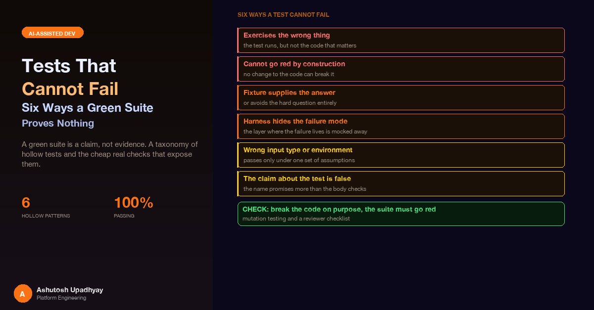

A green suite is a claim, not evidence. A taxonomy of hollow tests written by AI coding agents, the cheap real checks that expose them, and a reviewer checklist.
The suite was green: 279 tests, all passing, written by a coding agent alongside a new tool for a research assistant. Several of those tests asserted that the tool returned statuses such as "busy", "running" and "needs_clarification" at the top level of its result. The agent's framework accepts exactly two top-level values, "success" and "error". Anything else is forwarded to the model API, which rejects it, and the next model call in the turn fails. The paths the skill relied on most (the one that tells the model to stop and ask instead of guessing) would have killed the conversation on first contact with the real service.
Nothing in those 279 tests could have told us. The model was mocked, so the API's validation never ran, and the tests had been written to agree with the code rather than with the contract. The suite was not weak in the ordinary sense of low coverage. It was weak in a more awkward way: it was large, tidy, green, and it protected nothing on the paths that mattered.
This post is about that failure mode. When AI coding agents write your tests, you get volume that looks like assurance. Review is where the hollow ones get caught, and after enough rounds of it the hollow tests turn out to come in a small number of recurring shapes. I have grouped them into six families, each with short before-and-after snippets using neutral names. After that come the cheap, boring checks that catch them, and a table a reviewer can keep open while reading a diff. An earlier post, The Context-Window Overflow Was Not Where We Looked, has a section called "Tests That Haven't Failed Are Not Evidence", which covers two tests matching source text instead of behaviour. This post extends that idea rather than repeating it.
A coding agent will finish a task with a sentence like "added a batch of tests, all pass, mutation-checked." Each part of that sentence is a claim. "All pass" is the only one the test runner verifies, and it is the least informative, because a test that cannot fail also passes. "Mutation-checked" is the one I trust least, for a reason that comes up repeatedly below: the agent often reports the result of a mutation it described but did not actually apply, or applied to the wrong place.
Here is the sharpest version of the pattern. A first pass on a weekly digest backend by a coding agent passed 1,591 tests. A line-by-line read of the code, plus rendering a fixture email, then found 20 real defects. They included:
None of those are exotic. They are all the kind of defect a test exists to catch. The suite was large and did not catch them, because the tests that existed had been written against the agent's own picture of the code rather than against the behaviour of the thing in the world. A line-by-line read of the code, plus rendering one fixture email and looking at it, found what more than a thousand tests had not.
The working rule. A guarantee is protected only if I have seen a test go red when that guarantee is broken, by a change I made myself, in a place I can name. Everything else is a hypothesis with a green tick next to it.
After enough reviews, the patterns stopped looking like a long list of separate mistakes and started looking like six families. The useful part of a taxonomy is that it changes how you read a diff. Instead of asking "is this test good?", which is vague, you ask six specific questions. The snippets below are deliberately small and use neutral names; none of them is lifted from a real codebase.
The test looks right and runs real code, but the code under test is not the code that matters. This is the most common family, and the hardest to see by reading only the test.
Patching the wrong mock. A helper builds its own HTTP client inside the function. The test patches the client at the module level, outside the helper, and asserts on the outer mock. The helper re-patched the client, so the outer mock was never touched.
# Before: asserts on a mock nothing uses
def test_dry_run_sends_nothing():
with patch("pkg.http.Client") as outer:
run_export(dry_run=True) # builds and uses its own client inside
outer.return_value.post.assert_not_called() # always true
# After: assert on the mock actually in effect
def test_dry_run_sends_nothing():
client = make_client_recorder() # the same object the helper will use
run_export(dry_run=True, client=client)
assert client.calls == []Mocking the next function instead of the I/O boundary. A test for "listing never downloads anything" mocked the inner ingest() function, so the real path that would have requested a file named "list" never ran. For a guarantee of the form "no side effect happens", mock the thing that would carry the side effect, which is the HTTP client or the object-store client, and assert that no call was made.
# Before: mocks a function, so the real path is never exercised
def test_list_does_not_download(monkeypatch):
monkeypatch.setattr(mod, "ingest", lambda *a, **k: None)
mod.handle("list")
# After: mock the boundary, assert zero calls on it
def test_list_does_not_download(fake_store):
mod.handle("list")
assert fake_store.get_calls == []Calling the wrong validator. A test for "the product line is recognised" went through the modality check, while the defect lived in the identifier-token check. It passed for a reason unrelated to the fix. The remedy is to name the function under test and call it directly, not to reach it indirectly through a larger function with several validators in a row.
Here the test does run the right code, but its structure guarantees a pass.
The tautology. A "mutation witness" test fed already-stripped input and asserted it differed from the unstripped version. It never ran the code under test; it compared two literals the test itself had written.
The if-guarded assertion. If the behaviour is absent, the branch is skipped and the test passes.
# Before: passes whenever the feature is missing
def test_trend_arrow_rendered():
out = render_row(sample_rows())
if "▲" in out:
assert out.count("▲") == 1
# After: the fixture always produces the thing; the assertion is unconditional
def test_trend_arrow_rendered():
out = render_row(rows_with_rising_value())
assert out.count("▲") == 1The same shape turned up as if line: assert len(line) <= 160 and if len(turns) == 4:. Each is a test that passes for an empty result. The fix is always to build a fixture that is guaranteed to produce the thing, then assert without a condition.
The empty body. One def test_... contained only a comment. Its docstring claimed a mutation was caught. A simple AST pass that flags test functions with no assert, no raises and no call to a helper named like a check would find this in seconds.
Robot Framework variants. In a UI-testing seed suite, Run Keyword And Return Status wrapped checks and swallowed their failures: 36 swallowed failures in a run that reported 31 of 31 tests green. Related variants: a check that logs a warning instead of failing; Page Should Not Contain given an XPath expression, which treats it as literal page text and so always passes; an IF ${count} > 0 branch that never ran; a "verify" keyword that clicked and slept with no assertion afterwards; and two locators differing only by underscore, which the framework's name normalisation silently merged.
Substring checks against source text. Covered in the earlier post. The short version: presence of a string in a file is not behaviour.
This family is subtle, because every individual line of the test is reasonable. The problem is in what the fixture contains, or what it leaves out.
The fixture contains the value the fix removes. A fix said: strip item-ID citations before checking numbers against the source. The test used item titles such as "Study 7", so the number 7 was grounded through the title and the test passed with the fix deleted. When a test asserts that X is ignored, assert that the fixture does not contain X by another route.
# Before: the title already contains the number, so the fix is invisible
items = [{"id": 7, "title": "Study 7"}]
assert check_numbers("see item 7", items) == [] # passes with or without the fix
# After: make the fixture unable to answer by accident
items = [{"id": 7, "title": "Overview of outcomes"}]
assert str(items[0]["id"]) not in items[0]["title"]
assert check_numbers("see item 7", items) == [Flag("7")] # the fix strips the IDRound-trip that doesn't round-trip. A save-and-reload test built the reloaded object from the test's input rather than from the bytes the code actually wrote. Write regressions were invisible. Feed the real captured write back in.
Asymmetric matching. A validator split a text token into compound parts but did not split the corpus the same way, so ABC1 never grounded against a title containing ABC1xABC2xABC10. The test used a hand-built corpus that was already split. Probe validators with the real shape of recent data before trusting them.
The combination nobody wrote. This is the one I find most instructive. A coding agent added an "allow" exception to a read-only mode in a policy filter: a particular safe read was permitted. It implemented the exception as an early return that said ALLOW before the deny checks ran. So a request combining the safe read with a write was allowed in read-only mode. The exception came with 21 tests, all green, because none of them combined the exception with a write. Each test was correct on its own terms. The defect lived only in the combination. The rule that came out of it: an allow-exception belongs inside the mode's branch, after every deny check, and narrows exactly one deny reason. And when you probe an exception, probe it against each thing it must not override.
# Before: 21 tests like this one, each with a single operation
def test_own_profile_read_allowed_in_readonly():
assert decide(Request(reads=["own_profile"])) == ALLOW
# After: the exception combined with every operation it must not override
@pytest.mark.parametrize("extra", ["write", "write_in_same_batch",
"write_under_another_name", "write_nested_in_read"])
def test_exception_never_overrides_a_deny(extra):
req = Request(reads=["own_profile"], extra=extra)
assert decide(req) == DENYThe test is aimed at the right code with the right fixture, but the environment the test runs in differs from production in the one way that matters.
Threads. An executor test compared the worker thread with the pytest main thread to prove a blocking call ran "off the event loop". But the framework's test client runs the application on its own thread, so a blocking call still looked off-loop. The sturdier assertion is inside the callee: asyncio.get_running_loop() should raise there, because there is no running loop in a worker thread.
# Before: compares with the wrong thread
def test_runs_off_loop(client):
client.get("/report")
assert seen_thread_id != main_thread_id # true even when it blocks the loop
# After: assert the property directly, inside the callee
def blocking_work():
with pytest.raises(RuntimeError):
asyncio.get_running_loop() # no loop here means off-loop
return compute()Streams that always complete. The test client for a streaming endpoint runs the stream to the end and never simulates a real client disconnect. Code that leaks a resource on disconnect looks perfect under it. Likewise, running a scenario through asyncio.run closes leftover generators before the test gets to look at them. For disconnect behaviour, drive the ASGI application directly, send the disconnect message yourself, and assert inside the loop.
The early exit that skips the code under test. A test for "no fallback when the time budget is spent" set the budget in the past. The loop broke before its first call, so the branch under test never ran. A fake clock that advances during the call gets the run into the branch, and the test should assert the branch ran (a refusal was recorded) before asserting that nothing further happened.
Mocks and fixtures are made of simpler stuff than production objects, and the gap between them is where the bug lives.
Plain objects standing in for proxies. Export helpers for charts were tested with plain objects. In the real app the specs were reactive proxies created by the UI framework, and structuredClone throws on a proxy. The helper failed on every real chart and passed every test. The test runner here could not create the framework's proxies, so the fix was to pass a hand-made new Proxy(...) in a vitest file and assert on the real failure.
// Before: plain object, so structuredClone works
test("export clones the spec", () => {
expect(() => exportSpec({ data: [1, 2, 3] })).not.toThrow();
});
// After: the kind of value the app really passes
test("export clones a proxied spec", () => {
const spec = new Proxy({ data: [1, 2, 3] }, {});
expect(() => exportSpec(spec)).not.toThrow();
});A time-zone test that cannot fail on a UTC machine. A UTC date formatter was tested on a laptop and a CI runner, both in UTC, where local and UTC dates agree. Dropping the explicit timeZone: "UTC" from the implementation changed nothing. The test must pin the zone itself and choose a timestamp whose local date differs from its UTC date.
test("formats the UTC range regardless of local zone", () => {
const prev = process.env.TZ;
process.env.TZ = "America/Los_Angeles";
try {
// 02:00 UTC on the 1st is still the 30th in Los Angeles
expect(format_utc_range(Date.UTC(2026, 9, 1, 2), Date.UTC(2026, 9, 2, 2)))
.toBe("1 Oct 2026 to 2 Oct 2026");
} finally {
process.env.TZ = prev;
}
});A mocked model versus the real service. This is the opening story. When the model is mocked, nothing enforces the API's schema. The fix for that case was one test that drives every return path of the tool and asserts the top-level status is in {"success", "error"}, with richer states carried in the JSON body instead. It is a schema test, and it would have been worth more than the other 279 put together on that path.
Example code the model is told to copy. A prompt-level skill included a heatmap example. String checks on the skill text passed, but the example had never been run. One of its arguments does not exist in the plotting library, and a positional index broke on a DataFrame. A test that execs the example found both.
The last family is not about any single test. It is about the report that arrives with the suite.
A mutation that matched nothing. Mutations applied with sed that match no line exit successfully and change nothing. A test that stays green under a non-mutation proves nothing, and a transcript that says "mutation applied, test still green, therefore gap" (or the reverse) is equally void. The mutation must assert that its target text matched exactly once.
A mutation that hit the wrong block. I did this myself. I edited the first except ValueError in a file, which belonged to a different function, and concluded wrongly that a guarantee was unprotected. Print what you changed.
A negative control that breaks the call another way. To prove a conditional write was tested, an agent removed only the condition expression, leaving an unused placeholder value in the request. The database rejected the malformed request, and the test "went red" for a reason unrelated to the guarantee. Remove the whole construct, and check that the failure is the assertion you wrote, not a validation error or a name error.
A test that asserts the buggy state. A retry test asserted that a run stayed in its "uploaded" state. It passed because of the bug. The intended end state was "processing". If you can only make a test pass by encoding the current behaviour, ask whether the current behaviour is the one anyone wants.
"Would fail" without running it. Docstrings that say "mutation (1) caught" and reports that say a test "would fail" if a line were removed are statements about intent. Re-run every claimed mutation yourself. In my experience about the only way to find the false ones is to do exactly that.
None of this is specific to one model. The failure has a mechanical explanation. An agent that writes code and then its tests has the implementation in context and a goal of making the test command exit zero. The easiest way to a green run is to write assertions that agree with the implementation it just produced: patching the mock that is nearest, building the fixture out of the values the code happens to expect, copying the production expression into the assertion. Each of these feels like diligence from the inside, since the test looks thorough and the diff reads cleanly.
These are all small. None needs a framework, and each takes minutes rather than hours. The common thread is that the check is independent of the author of the test: run by someone or something that did not write it, against the actual code, in a place that cannot damage the repository.
For each new guarantee, copy the project to a temporary directory, apply one targeted edit with an exact-string replace that asserts the target appears exactly once, run only the relevant test, and confirm it goes red. Then delete the copy. The script below is generic; swap in your own paths, pattern and test id.
#!/usr/bin/env python3
"""mutate_check.py: prove a test fails when one guarantee is broken."""
import pathlib, shutil, subprocess, sys, tempfile
SRC = pathlib.Path(".").resolve()
TARGET = "src/service.py" # file to mutate (relative)
OLD = "if remaining <= 0:\n break" # exact text to find
NEW = "if False:\n break" # the mutation
TEST = "tests/test_service.py::test_stops_when_budget_spent"
with tempfile.TemporaryDirectory() as tmp:
work = pathlib.Path(tmp) / "copy"
shutil.copytree(SRC, work, ignore=shutil.ignore_patterns(".git", "__pycache__"))
f = work / TARGET
text = f.read_text()
assert text.count(OLD) == 1, f"mutation target matched {text.count(OLD)} times"
f.write_text(text.replace(OLD, NEW))
print("changed:", TARGET)
print(subprocess.run(["diff", "-u", str(SRC / TARGET), str(f)],
capture_output=True, text=True).stdout)
red = subprocess.run([sys.executable, "-m", "pytest", "-x", "-q", TEST],
cwd=work, capture_output=True, text=True)
if red.returncode == 0:
sys.exit("FAIL: test stayed green under the mutation (hollow test)")
print("OK: test went red. Confirm the failure is the assertion, not an import error:")
print(red.stdout[-600:])Three details carry the weight. The count == 1 assertion kills the no-op mutation. The printed diff kills the "wrong block" mistake, since you can see what changed. And the last line reminds you to read the failure: an ImportError caused by a bad edit is also a red test, but it says nothing about your guarantee.
For any "nothing happens" guarantee (no download, no send, no write), replace the HTTP, email or object-store client with a recorder and assert its call list is empty. Mocking an internal function only proves that the internal function was not called.
Capture the bytes the code wrote and use them as the input to the reload. Give helpers the kind of object production gives them: a proxy, a timezone-aware datetime, a non-ASCII string, an awkward float. Build those explicitly if the test runner cannot create them.
Any example code in a prompt or skill file will be copied by a model, so execute it. For strings of code you assemble, such as a JavaScript snippet built as a Python string, run a syntax check (node --check). For a UI-automation library, instantiate the real class and run robot --dryrun on a tiny suite containing the exact import line. Mock-heavy suites routinely miss what these catch: an attribute the real class will not let you assign, a wrong private attribute name, a library that cannot be imported under the exact line a suite uses.
Set the time zone, locale and working directory inside the test and restore them in a finally. A test that passes only because the machine running it is in UTC will fail on the first colleague in another zone, or never.
For streaming and disconnect behaviour, drive the ASGI app directly rather than through the convenience client, and assert while the stream is still open. For concurrency, assert the property inside the callee.
This is the table I keep open while reading a diff of agent-written tests. The right-hand column is the question to ask, not the answer.
| Family | Symptom in the diff | Question to ask | Cheap check |
|---|---|---|---|
| 1. Wrong target | Patch applied outside a helper; mocks an internal function; assertion on a mock the code never touches | Is this the object the code under test actually uses? | Mock the I/O client; assert on its call list |
| 2. Cannot go red | if before an assert; empty body; tautology; swallowed-status keywords | What does this test do when the feature is absent? | Delete the feature in a temp copy; expect red |
| 3. Fixture answers for you | Fixture contains the value the fix removes; tiny inputs; single-operation tests of an exception | Could this pass with the fix deleted? Which combination is missing? | Assert fixture lacks the value; parametrise combinations |
| 4. Harness hides it | Convenience test client; early exit; comparison with main thread; writes outside tmp_path | Does the harness reproduce the failure mode? | Drive the lower layer; assert inside the callee |
| 5. Wrong type or environment | Plain objects for proxies; mocked model; machine-local time zone; never-run examples | What does production pass in, and where does it differ? | Real types; pinned zone; exec the example; schema test |
| 6. False claim | "Mutation caught" in a docstring; "would fail" in a report; sed mutation with no count | Did someone actually apply it and see red? | Re-run every claimed mutation; assert count == 1 |
Check the reason for red. Every mutation run ends with a failing test, and that is only half the evidence. Read the failure message. A red test caused by an import error, a name error or a malformed request is not evidence for the guarantee you were probing.
Two things would raise the floor further, and both reuse data the system already produces.
Trace-replay regression evals. Agent systems emit traces: every tool call, the real tool result, and the final answer. Those are recordings of production-shaped inputs, which is exactly what mocked tests lack. The idea is to pick a sample of real sessions, and for each one replay the conversation against a changed prompt or a different model, with the tools stubbed from the recorded results rather than called live. Then diff the grounded claims in the new answer against the old. A change that quietly starts dropping a table, inventing a number or skipping a required tool call shows up as a diff against a real session, not as a failure of a test someone remembered to write. It also turns a model migration into something you can measure with your own traffic.
Mutation testing in CI, scoped to the lines a change touches. Full mutation testing is slow, but a diff is small. For each changed hunk, generate a handful of mutants (flip a comparison, delete a branch, swap a constant), run only the tests that import the file, and report any mutant that survives. That automates the manual script above, keeps its count-asserted discipline, and puts the result in the review next to the diff, where the person deciding whether to trust the suite will see it. The agent that wrote the tests can read the survivors and strengthen them, which is a better use of its loop than reporting that it is done.